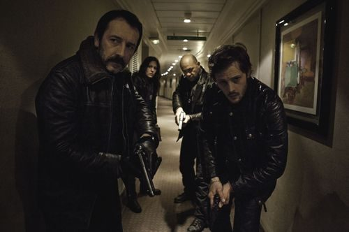

Top 10 des films en 2009
C'est l'heure des classements sur tous les sites, dans toutes les revues. Comme vous le savez, le cinéma est une de mes passions, alors c'est parti pour mon top des films en 2009
En 2009, j'aurai vu 125 films, quasiment comme l'année dernière.
Avant de donner le top, prenons quelques précautions, et citons quelques films que je n'ai pas encore eu l'occasion de voir, et pour lesquels j'ai eu de bons échos: Le Ruban Blanc de Haneke, Welcome de Lioret, The Road de Hillcoat, The Chaser de Hong-jin Na.
Voici mon top des 10 films à voir en 2009
1. Un prophète

2. The Curious Case of Benjamin Button


8. The Reader
10. Red Cliff
Et puis, voici quelques autres films de 2009 dont il faut certainement parler.
Le film le plus inclassable Funny People de Judd Apatow, drôle et émouvant, Adam Sandler parfait, j'ai hésité à le mettre dans mon top 10. A voir!
Le petit film sympa dont on aurait dû plus parler? AdventureLand de Greg Mottola, petit film, belle réussite, ... personne ne l'a vu et pourtant ...
Les films les plus drôles? I love you, Man de John Hamburg, je ne sais pas pourquoi, j'ai adoré. Paul Rudd et Jason Segel forment un duo formidable. Zack and Miri Make a Porno de Kevin Smith, pour certaines scènes et surtout dialogues drôllissimes The Hangover de Todd Philips, ... faut-il réellement encore en parler?
Les films les plus funs? Zombieland de Ruben Fleischer, pour Woody et pour Bill District 9 de Neill Blomkamp, même s'il perd sur la longueur, c'est une belle réussite.
Le film le plus débile (et drôle à la fois d'ailleurs)? Død snø aka Dead Snow de Tommy Wirkola, un film suédois avec des zombies nazis dans la neige, ca c'est du pitch.
Le film d’horreur le plus sympa? Drag me to hell, quel bonheur de revoir Sam Raimi partir dans ses délires.
La révolution technologique?

Et puis, il faut que je dise un mot sur Avatar quand même. Je me suis un peu forcé à ne pas le mettre dans mon top 10, alors que j'ai vraiment apprécié. Je pense toutefois que j'ai plus apprécié l'expérience, le résultat du travail de création de Pandora, de ses habitants, que le film dans son ensemble. En y repensant deux jours après l'avoir vu, je me suis demandé si Cameron avait dû sortir une version courte (2h30) de son film? Je trouve que le film aurait gagner en intérêt s'il y avait plus de scènes dans la base des Marines. Plus d'explications sur la société d'extraction, plus de scènes aussi sur l'armée, dont les appareils et machines sont un plaisir à découvrir en 3D pour les amateurs de SF. Finalement, on a l'impression qu'il ne reste que les passages obligés de l'histoire, et qu'on aurait pu en tirer encore plus. Mais je ne dois pas bouder mon plaisir, j'attendais le film depuis des lustres, et j'ai pris mon pied!
Rattrapage 2008 Enfin, voici également les séances de rattrapage de 2008 et avant, quelques films que je conseille vivement: Pour elle de Fred Cavayé, Joheunnom nabbeunnom isanghannom aka The Good, the Bad, the Weird de Ji-Woon Kim, Die Welle de Dennis Gansel, Two Lovers de James Gray, Le premier jour du reste de ta vie de Rémi Bezançon, Deux jours à tuer de Jean Becker.
Et les Serie TV
* 

Pour finir, un petit mot sur les séries TV démarrées en 2009. Cette année, il n'y a pas photo, le top, c'est Braquo. De loin le plus prenant, bien foutu, bien joué, qu'on ait pu voir à la télé depuis pas mal de temps. A côté de Braquo, les autres séries paraissent bien légères. Le nouveau "V" est sympa, tout comme "The Vampire Diaries" est gentillet, alors que Flash Forward semble se prendre les pieds dans le tapis d'une histoire qui avance sans avancer. Il n'y a pas photo donc, vivement la suite de Braquo ...
Commentaires 10
Top 10 des films en 2010 « The R Blog, 2010-12-05 21:15
[...] 2010, j’aurai vu une centaine films, certainement moins que l’année précédente en tout cas. Plus de travail ou plus de temps en famille? Je ne sais pas. En tout cas l’année 2010, est [...]
Top 10 des films en 2011 « The R Blog, 2011-12-30 15:46
[...] rappel, voici le top en 2010, le top en 2009, le top en 2008, le top en 2007 (année étrange) et un top combiné 2004-2005-2006 (là, il y a [...]
Caroline, 2009-12-27 01:59
Merci Patrice de ton top 10 toujours passionant et passionné... ...Inglourious Basterds - je n'aurais jamais été voir ce film et quelle erreur cela aurait été! j'ai adoré. Même chose avec Braquo - pas pu décrocher avant la fin. aujourd'hui je regrette de ne pas avoir vu Up in the air puisque partie trop tôt des states mais me réjouis de le voir ici dans quelques semaines. Et puis je peux demander à Georges de m'en ramener une copie quand il repasse à la maison en janvier aussi = ( J'ai cette année vu plus de films et de séries que dans ma vie entière et cela grâce à toi - parce que tu partages ta passion et que ça cela n'a pas de prix! =x Maintenant à moi de te mettre à cheval! mouhahahahaha bon cela dit j'ai bien aimé le nouveau mot à la sauce Roulive : "gentillet" ; ) faudra que tu le resortes celui là! PS : Et Sex and the city il est pas dans ton classement 2009?! ou tu te réserves pour 2010? = ) Ciao Caro
patrice.roulive, 2009-12-29 14:17
Mais avec plaisir. Pour le cheval ... on verra un jour peut-être ;-) Sex in the City n'est pas dans mon classement, comme c'est étrange. Peut-être l'année prochaine avec le 2 ;-)
Le top des films de 2013 | The R Blog, 2013-12-26 16:22
[…] rappel, voici les tops des années précédentes: Top 2012, Top 2011, Top 2010, Top 2009, Top en 2008, Top en 2007 , Top […]
Le top des films 2014 ! | The R Blog, 2014-12-25 11:21
[…] rappel: le top 2013, Top 2012, Top 2011, Top 2010, Top 2009, Top en 2008, Top en 2007 , Top […]
Le top des films 2015 ! | The R Blog, 2015-12-25 20:57
[…] rappel: Top 2014, Top 2013, Top 2012, Top 2011, Top 2010, Top 2009, Top en 2008, Top en 2007 , Top […]
Le top des films 2016 | The R Blog, 2017-01-16 10:00
[…] rappel: Top 2015, Top 2014, Top 2013, Top 2012, Top 2011, Top 2010, Top 2009, Top en 2008, Top en 2007 , Top […]
Le top des films 2018 | The R Blog, 2019-01-17 18:00
[…] Top 2017, Top 2016, Top 2015, Top 2014, Top 2013, Top 2012, Top 2011, Top 2010, Top 2009, Top en 2008, Top en 2007 , Top […]
Le top des films 2017 | The R Blog, 2017-12-27 11:39
[…] rappel: Top 2016, Top 2015, Top 2014, Top 2013, Top 2012, Top 2011, Top 2010, Top 2009, Top en 2008, Top en 2007 , Top […]